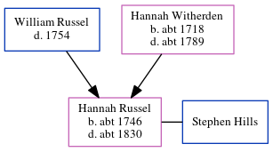

Hannah Hills (née Russel) c1746 - c1830
[ Home ] | [ Calendar ] | [ Surnames Index ] | [ Census Index ] | [ Family History ]The child of William Russel and Hannah Witherden, Hannah Russel, the first cousin six-times-removed on the father's side of Nigel Horne, was born c. 1746 and baptized in St Peters, Thanet, Kent, England on Oct 10, 1746. She married Stephen Hills there on Feb 8, 17701.
She died c. 1830 and was buried in St Peters on Oct 31, 18302.
Parents
- Hannah was born c. 1718
Citations
- England Marriages 1538-1973 - Findmypast
- Kent, Canterbury Archdeaconry burials 1538-1988 - Findmypast
Media
England Marriages 1538-1973 - R_847900226/2
England Marriages 1538-1973 - R_848290617/2
England Marriages 1538-1973 - R_849841606/2
Kent, Canterbury Archdeaconry burials 1538-1988 - GBPRS/CANT/D/95091860
East Kent Burial Index - GBPRS/D/407050475/1
Family Tree
Generated by ged2site. Last updated on Jun 11, 2024